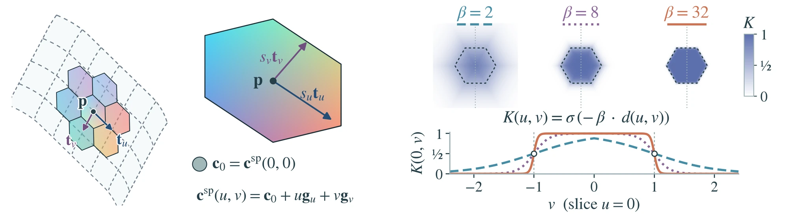
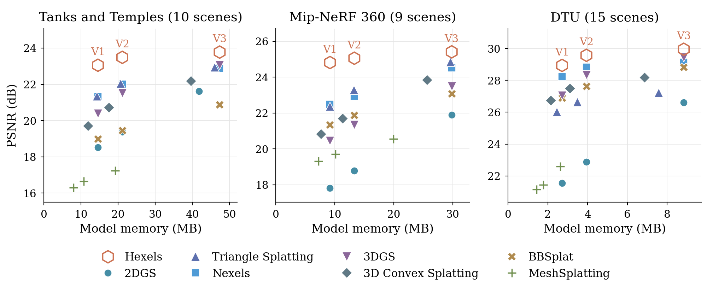
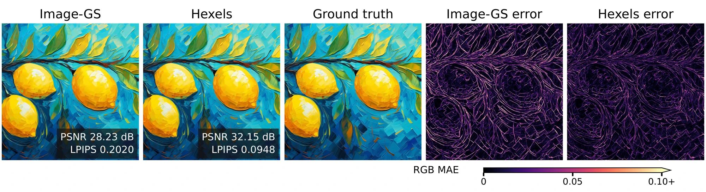

Abstract
Abstract: TBD. The abstract will be added here.
Method

Each Hexel places its local coordinates \((u,v)\) in 3D through its center \(\mathbf{p}\), unit tangents \(\mathbf{t}_u,\mathbf{t}_v\) and scales \(s_u,s_v\), and its color changes linearly along them:
Where a pixel's ray meets the plane, the Hexel's opacity \(o\) times its soft hexagonal support \(K\), capped at 0.99, gives its alpha \(\alpha=\min\{o\cdot K,\,0.99\}\), and colors are blended front to back as in 2DGS. Because the color varies across each patch, fewer, larger Hexels can cover regions whose appearance changes smoothly. V1 uses this spatial color alone, 20 learned numbers per Hexel, while V2 and V3 add an RGB offset that depends on the viewing direction, for 29 and 65 numbers.
In the paper: Figure 2 and Section 3, Eqs. (1) to (4). The parameter counts and appearance variants are in Appendix A, the rasterizer in Appendix B.
What the primitives look like
Drag the crosshair to compare the renders (top) and the primitives (bottom) of Hexels and a Gaussian method, 3DGS or 2DGS, with every primitive drawn in a random color.
Novel view synthesis
Compare Hexels V3 (densified) with eight baselines on all 34 scenes. Pick a scene and a method for each side and drag the divider to compare; pause the video to see synchronized close-ups of all nine methods.
All 34 scenes
Every scene rendered by Hexels V3 (densified). Hover over a scene to play its video, or hit "Compare" to compare with other baselines above.
Quantitative results
Rendering quality against efficiency for Hexels and seven baselines. On Tanks and Temples, Hexels V3 (densified) reach 24.53 dB, above 2DGS (23.64 dB), Triangle Splatting (23.15 dB) and MeshSplatting (20.73 dB), and Hexels V2 keeps 23.49 dB in 21.12 MB. Averaged over the three datasets, Hexels V3 (densified) match 3DGS in PSNR (26.94 versus 26.93 dB) with less than half its model memory (152.26 versus 340.20 MB). Pick a dataset, a quality metric and an efficiency metric; hover over or tap a point for all of its numbers.
Quality at matched model memory

Hexels variants
Six Hexels models trained from the same COLMAP initialization: V1 (spatial color gradient), V2 (plus a linear view-dependent term) and V3 (plus degree-3 spherical harmonics), each with a fixed population or with densification. The grid plays all six along the same camera path. Densification adds the most on the large unbounded scenes (Mip-NeRF 360: 24.82 to 26.05 dB for V1, 25.41 to 26.52 dB for V3) and the least on DTU objects, where fixed V3 scores best (29.95 dB in 8.83 MB). Spherical harmonics improve every fixed population (Mip-NeRF 360: 24.82 to 25.41 dB; DTU: 28.94 to 29.95 dB), while densified V3 needs far more training memory (13.95 versus 2.75 GiB of peak VRAM for densified V2 on Mip-NeRF 360).
Surface reconstruction
Here we compare surface reconstruction quality of Hexels against 2DGS, Triangle Splatting and MeshSplatting. Chamfer distance (mm, lower is better) is used for evaluation on 15 DTU scans and F-score on 6 Tanks and Temples scenes (%, higher is better). On DTU, Hexels V3 with MVS initialization average 0.978 mm, behind unconstrained 2DGS (0.794 mm) but ahead of 2DGS matched to Hexels' memory (1.375 mm) or primitive count (1.449 mm), Triangle Splatting (1.124 mm) and MeshSplatting (1.662 mm). On Tanks and Temples Hexels gives the highest mean F-score, 34.38% against 31.72% for 2DGS.
Depth and normals
Expected depth and rendered normals of Hexels V3 (densified) for one held-out view per dataset. Depth is color-coded by inverse depth from red (near) to blue (far), and the camera-space normals \(\mathbf{n}\) (x right, y up, z toward the viewer) are shown as RGB \((\mathbf{n}+1)/2\).
Depth near far
Normals facing the camera facing right facing up no surface
2D image representation
The same primitive represents images directly in the image plane, without projection, opacity or depth ordering. On the 45-image Image-GS benchmark, at the same number of primitives, Hexels outperform Image-GS on every reported quality metric with 5,100 instead of 10,000 iterations.

Image-GS benchmark, 45 images, at the same number of primitives. Constant-color Hexels store the same eight scalars per primitive as Image-GS. Bold marks the best value in each column, as in the paper.
| Method | PSNR ↑ | SSIM ↑ | LPIPS (AlexNet) ↓ | Iterations ↓ | Train (s) ↓ | FPS ↑ |
|---|---|---|---|---|---|---|
| Image-GS | 33.15 | 0.9141 | 0.1372 | 10,000 | 238.40 | 260.44 |
| Hexels (constant) | 33.38 | 0.9158 | 0.1184 | 5,100 | 121.61 | 247.62 |
| Hexels | 34.84 | 0.9297 | 0.1012 | 5,100 | 176.94 | 280.56 |
BibTeX
@article{kaushik2026hexels,
title = {Honeycomb-Surfels: Compact Hexagonal Primitives for Efficient Scene Rendering and Reconstruction},
author = {Kaushik, Prakhar and Paul, Soumava and Yuille, Alan},
journal = {arXiv preprint arXiv:XXXX.XXXXX},
year = {2026}
}The arXiv identifier will be filled in when the paper is posted.